167년 묵은 리만 가설의 증명이 기계 검사를 통과했지만, 끝까지 읽은 사람은 아직 없다. 같은 주 Anthropic은 코드 승인까지 AI에게 맡기는 Claude Ship을 냈다.
1
리만 가설 증명이 기계 검사를 통과했다, 끝까지 읽은 수학자는 아직 없다
1 / 6
AI가 푼 증명, 아무도 안 읽었는데 믿어도 될까?
11월 20일 Anthropic의 수학자가 Claude와 함께 리만 가설 증명을 찾았다고 밝혔어요. 167년 묵은 수학 난제예요.
기계는 맞다고 했고, 사람은 아직 못 읽었어요.
phys.org(AFP)
2 / 6
1,700만 줄원본
같은 증명을 판마다 줄 수로 비교했어요. 가장 짧은 판도 사람이 읽기엔 길어요.
사람이 읽을 수 없는 1,700만 줄
증명은 Lean이라는 검사용 언어로 쓴 코드예요. 동료들이 줄인 판도 30만 줄이라 사람이 따라 읽을 수 없어요.
읽고 심사하는 기존 방식이 통하지 않아요.
Lean FRO · Mathlib 공동 성명, grh-lean 저장소
3 / 6
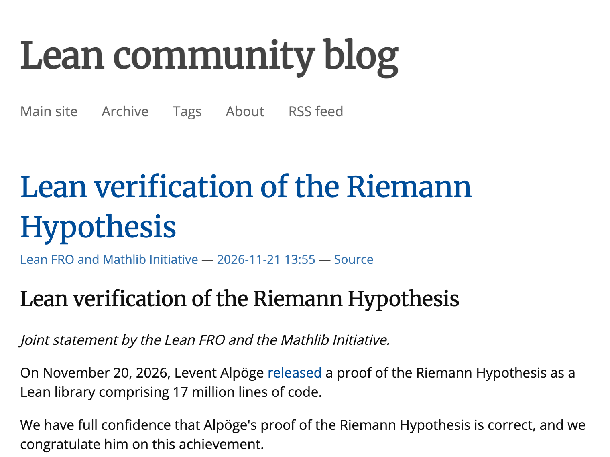
Lean 커뮤니티 블로그 11월 21일
검사기는 하루 만에 「맞다」
11월 21일 Lean FRO와 Mathlib 측이 진술과 증명이 모두 맞다고 인증했어요. 다른 검사기들도 같은 답을 냈어요.
틀린 단계는 없다는 데까지는 확인됐어요.
Lean 커뮤니티 블로그
4 / 6
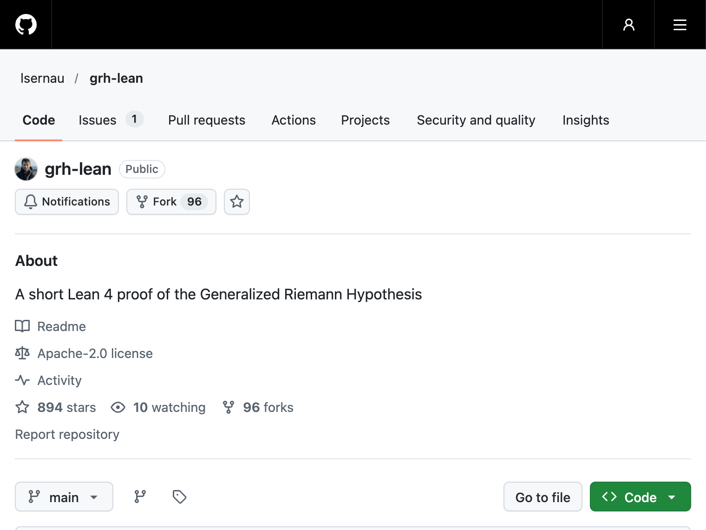
grh-lean 저장소
읽은 수학자도, 논문도 아직 없다
저장소에는 끝까지 읽은 수학자도, 함께 낸 논문도 없다고 적혀 있어요. 증명을 찾은 본인도 나중에 글로 쓰겠다고 했어요.
맞다는 것과 이해했다는 것이 처음으로 갈라졌어요.
grh-lean 저장소
5 / 6
공식 인정까지는 최소 2년
클레이 연구소 규칙상 해법은 학술지에 실린 뒤 2년을 버텨야 해요. 외부 전문가 검토도 아직이에요.
기념비적일 수 있지만, 지금은 주장이에요.
phys.org(AFP)
6 / 6
믿는 기준이 「검사 통과」로 옮겨 간다
답이 사람이 읽을 크기를 넘으면 설명보다 기계 검사로 믿게 돼요. 수학이 그 첫 사례가 됐어요.
이해는 그다음 숙제로 남았어요.
Lean FRO · Mathlib 공동 성명
이 소식이 뜻하는 것
원리
사람이 읽을 수 없는 크기의 답은 기계 검사로 믿게 돼요.
해석
눈여겨볼 것은 신뢰하는 방식이에요. 수학이 「검사를 통과하면 믿는다」로 먼저 옮겨 갔어요.
아직 모름
왜 참인지 설명하는 논문과 외부 심사는 아직이에요.
우리 팀에게는
AI가 낸 코드도 설명보다 테스트 통과로 믿는다.
AI에게 구현보다 테스트를 먼저 쓰게 한다.
그 테스트는 사람이 읽고, 빠진 경우를 직접 더한다.
2
AI가 코드 승인까지 맡는 주, 휴먼인더루프의 한계를 짚은 논문도 나왔다
1 / 7
코드 승인, AI에게 맡겨도 될까?
Anthropic이 11월 23일 Claude Ship을 냈어요. PR을 리뷰하고 고치고, 규칙이 허락하면 승인까지 해요.
사람이 누르던 「승인」을 AI가 눌러요.
Anthropic 발표
2 / 7
2배 넘게9월
Claude Code 팀이 합친 PR 수를 6월을 1로 놓고 비교했어요.
합친 PR은 두 배, 읽을 사람은 그대로
Claude Code 팀은 6월에서 9월 사이 합친 PR이 두 배 넘게 늘었대요. 쓰는 속도가 오르면 리뷰할 양도 함께 늘어요.
막히는 곳이 쓰기에서 읽기로 옮겨 갔어요.
Anthropic 발표(자체 수치)
3 / 7
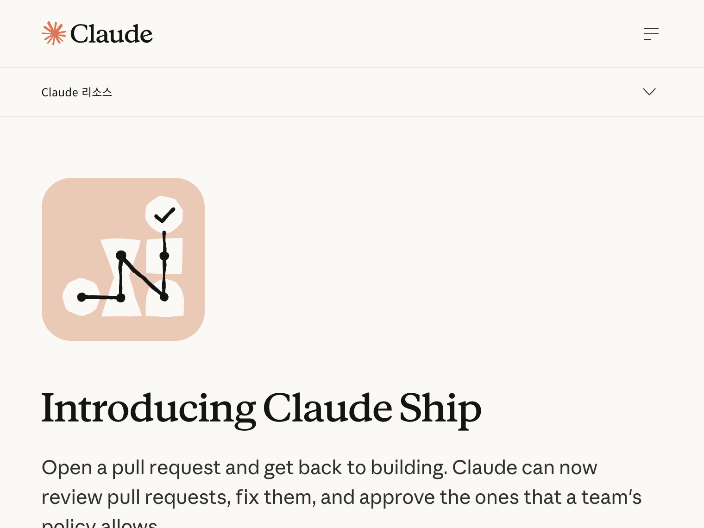
Anthropic 발표 11월 23일
고치는 AI와 승인하는 AI는 따로
Code Review가 논리 오류와 보안 문제를 찾아요. PR Steward는 실패한 검사와 충돌을 고쳐 커밋하지만, 승인하지는 않아요.
고친 쪽이 스스로 통과시키지 못하게 나눠 뒀어요.
Claude Ship 문서
4 / 7
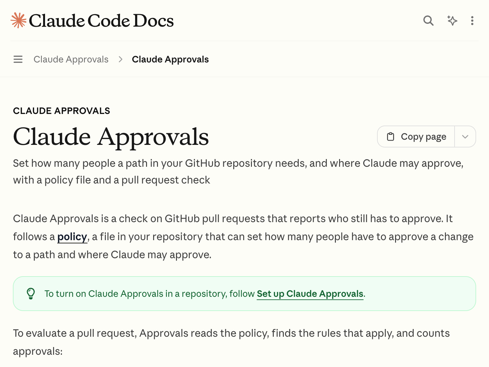
Claude Approvals 문서
누가 볼지는 규칙 파일이 정한다
Claude Approvals는 저장소의 규칙 파일대로 승인자를 정해요. 자동 병합에서 사람 승인을 빼면 아무도 안 보고 합쳐질 수 있다고 문서가 경고해요.
사람의 자리를 규칙이 정해요.
Claude Approvals 문서
5 / 7
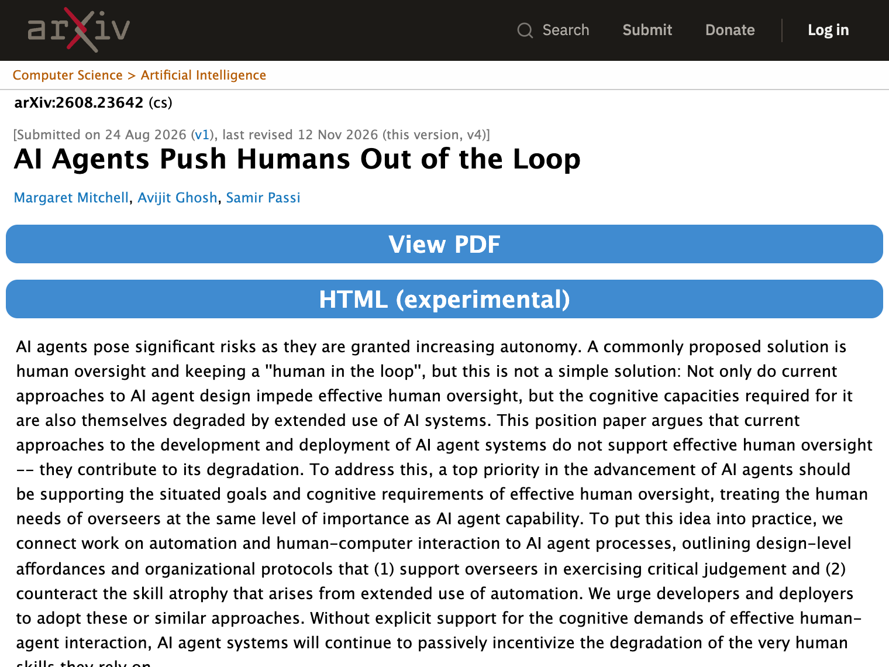
arXiv 2608.23642
휴먼인더루프, 사람이 있으면 안전할까?
휴먼인더루프는 AI가 일하는 중간에 사람이 확인 · 승인하는 구조예요. Hugging Face의 Margaret Mitchell 등이 NeurIPS 2026 논문에서 이 믿음을 반박했어요.
사람이 고리 안에 있는 것만으로는 부족해요.
arXiv 2608.23642
6 / 7
승인 창이 반복되면 읽지 않고 누른다
승인을 되풀이하면 사람은 읽지 않고 눌러요(승인 피로). 오래 맡길수록 오류를 알아보는 감각도 줄어요.
고리 안의 사람이 먼저 무뎌져요.
arXiv 2608.23642
7 / 7
사람의 확인은 아껴 쓰는 값
단순한 변경은 규칙대로 AI가 승인해요. 사람은 되돌리기 어려운 동작 앞에서만 멈춰 읽어요.
휴먼인더루프를 좁혀야 그 고리가 살아 있어요.
Claude Approvals 문서 · arXiv 2608.23642
이 소식이 뜻하는 것
원리
휴먼인더루프는 사람이 실제로 읽을 때만 안전장치예요. 승인이 잦아지면 그 전제가 깨져요.
해석
관찰 모드(observe)로 시작하라는 권고가 핵심이에요. 사람이 필요한 곳을 먼저 재고 나서 넘기라는 뜻이에요.
아직 모름
AI 승인이 사고를 줄이는지 늘리는지는 아직 데이터가 없어요.
우리 팀에게는
승인은 되돌리기 어려운 동작에만 남기고, Claude Ship은 관찰 모드로 먼저 본다.
.claude/approvals.yml은 mode: observe로 시작한다.
git push · 삭제 · 배포는 매번 묻는 목록에 남긴다.
3
AI 시대 한국 경제의 세 쏠림, 함께 푸는 열쇠는 지방 AI 데이터센터
1 / 7
AI 시대, 한국 경제가 통째로 멈출 수 있다고?
한국 경제가 세 곳에 기대고 있다는 경고가 나왔어요. 반도체 수출, 미국의 연산력, 수도권이에요.
한 곳이 막히면 전부 멈출 수 있어요.
moodmode.ai 카드뉴스(11월 25일)
2 / 7
166억 달러반도체
11월 1~10일 수출액이에요(관세청 잠정치).
쏠림 ① 수출 절반이 반도체 하나
11월 1~10일 수출 335억 달러 중 166억 달러가 반도체였어요. 반도체 경기가 꺾이면 수출 전체가 흔들려요.
수출이 한 품목에 기대고 있어요.
관세청 11월 11일 잠정치
3 / 7
74.5%미국
Epoch AI가 추적한 AI 슈퍼컴퓨터 성능의 나라별 비중이에요.
쏠림 ② AI 연산력 4분의 3은 미국에
전 세계 AI 슈퍼컴퓨터 성능의 74.5%가 미국에 있어요. 한국은 AI를 돌릴 힘을 빌려 쓰는 쪽이에요.
빌려 쓰면 끊길 때 대안이 없어요.
Epoch AI(2025년 5월)
4 / 7
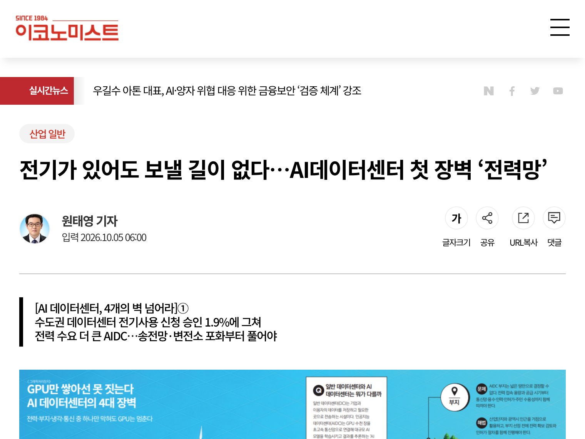
이코노미스트
쏠림 ③ 데이터센터마저 수도권으로
데이터센터 전기 사용 신청 736건 중 522건이 수도권이었어요. 사람도 산업도 몰린 곳에 새 산업까지 몰려요.
지역 격차가 AI 시대에 더 벌어져요.
이코노미스트
5 / 7
세 쏠림을 함께 푸는 열쇠, AI 데이터센터
직접 지으면 빌려 쓰던 연산력이 우리 자산이 돼요. 변압기 · 냉각 · 건설 · 운영까지 여러 산업이 같이 움직이고, 지방에 지으면 일자리가 지역에 남아요.
미국 의존 · 반도체 쏠림 · 수도권 쏠림을 한 번에 줄여요.
moodmode.ai 카드뉴스(11월 25일)
6 / 7
89.7%비수도권
데이터센터 전기 공급 본심사 통과율이에요.
지을 곳은 지방, 전기가 열려 있다
수도권은 전기 신청 522건 중 최종 승인이 10건뿐이에요. 비수도권 본심사는 29건 중 26건(89.7%)이 통과했어요.
전기 사정도 지방에 짓는 쪽을 거들어요.
이코노미스트 · 머니투데이
7 / 7
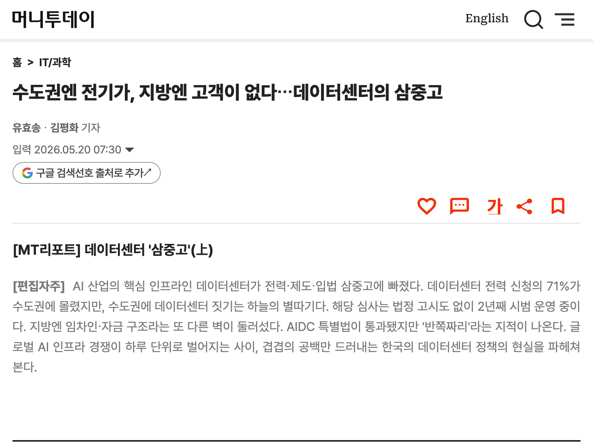
머니투데이
남은 숙제는 고객
응답 속도가 중요한 추론용 센터는 쓰는 사람 가까이 있어야 해요. 그래서 학습용 센터부터 지방으로 가는 순서가 현실적이에요.
열쇠가 돌려면 수요도 지방으로 가야 해요.
머니투데이
이 소식이 뜻하는 것
원리
AI 데이터센터 하나가 세 쏠림을 함께 완화해요. 연산력은 자산으로, 산업은 반도체 밖으로, 일자리는 지방으로요.
해석
전기 데이터가 이 해법의 근거예요. 수도권은 신청 522건 중 10건만 전기를 받아 지방 말고는 지을 곳이 마땅치 않아요.
아직 모름
한 곳 「3조 5천억 원 효과」와 「6월 3주 접속 차단」은 원출처를 찾지 못했어요.
우리 팀에게는
알아 둘 흐름. 숫자를 옮길 땐 원출처부터 확인한다.
카드뉴스 숫자는 AI에게 원출처 표부터 만들게 한다.
4
Claude에 붙인 서버가 도구와 함께 쓰는 법까지 보낸다
1 / 5
도구만 받던 AI, 이제 쓰는 법도 받는다고?
Anthropic이 11월 24일 Skills over MCP를 공개 베타로 열었어요. MCP 서버가 도구와 함께 스킬(일하는 법 지침서)을 보내요.
스킬을 따로 찾아 까는 일이 줄어요.
Anthropic 발표
2 / 5
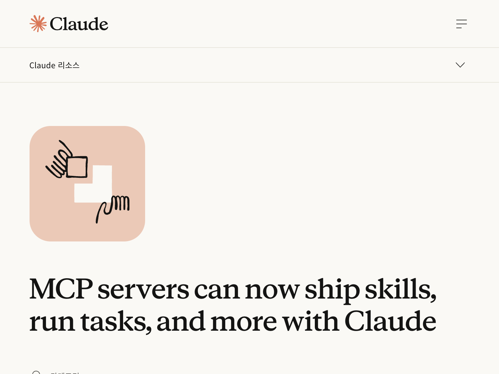
Anthropic 발표 11월 24일
따로 깐 스킬은 서버가 바뀌면 낡았다
도구만 받은 AI는 쓰는 순서를 몰라 사람이 스킬을 따로 깔았어요. 서버가 바뀌면 그 스킬은 낡았어요.
도구와 지침이 따로 놀았어요.
Anthropic 발표
3 / 5
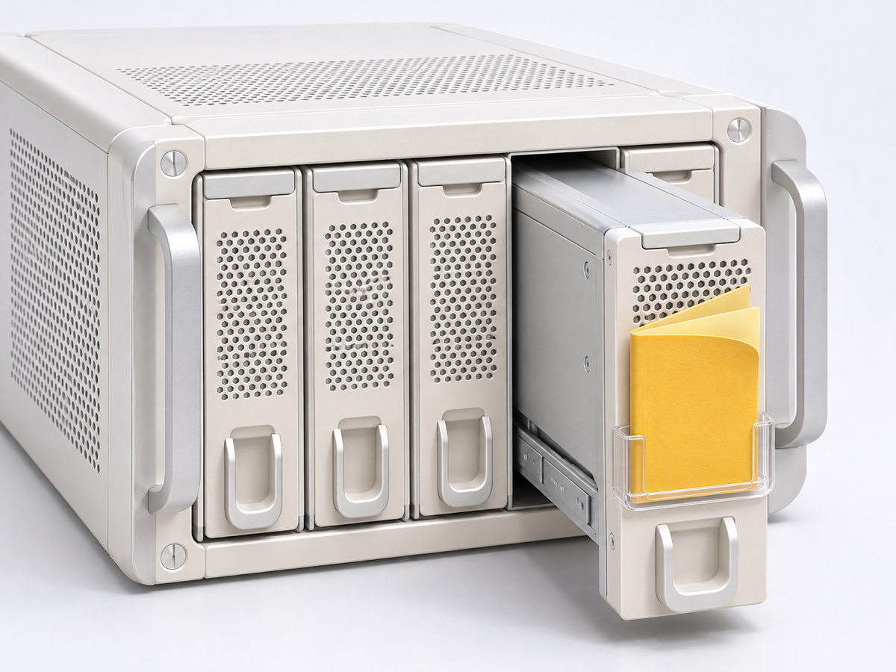
이제 서버가 바뀌면 스킬도 같이 바뀐다
Claude는 서버가 보낸 스킬을 필요할 때만 읽어요. 지침이 서버와 함께 움직여요.
일하는 법을 고치는 쪽이 도구를 만든 회사로 옮겨 가요.
Anthropic 발표
4 / 5
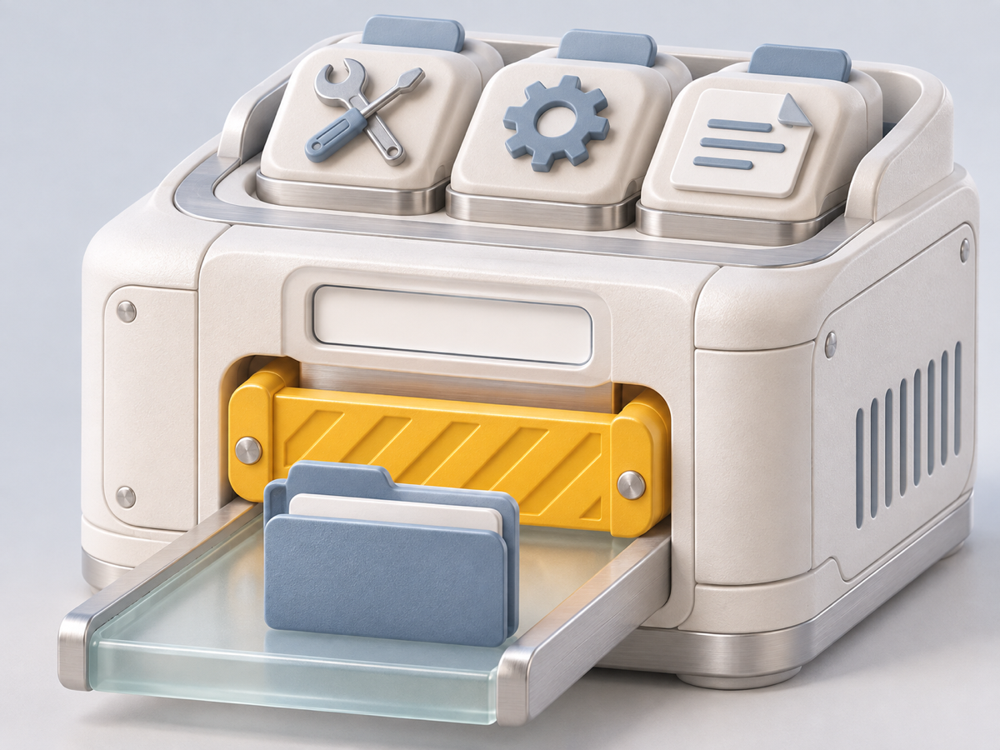
멈춤도 서버가 정한다
Shopify · HubSpot · Atlassian이 먼저 스킬을 실었어요. GitHub는 에이전트가 저장소를 지우기 전에 저장소 이름을 입력하게 해요.
위험한 동작 앞의 멈춤도 서버 몫이 됐어요.
Anthropic 발표
5 / 5
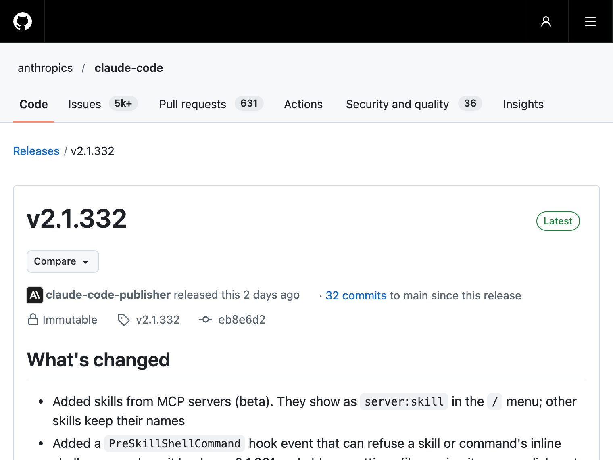
Claude Code 2.1.332
들어오는 길이 넓어진 만큼 막는 문도
Claude Code 2.1.332는 스킬 속 셸 명령을 불러오는 순간 거부하는 훅을 더했어요.
받는 지침이 늘수록 실행 전 검사도 늘어요.
Claude Code 2.1.332 변경 기록
이 소식이 뜻하는 것
원리
지침이 도구와 함께 배달되면, 일하는 법을 고치는 쪽이 도구를 만든 회사로 옮겨 가요.
해석
서버 하나를 붙이는 일이 그 회사의 일하는 방식까지 들이는 일이 됐어요.
아직 모름
공개 베타라 스킬을 싣는 서버는 아직 몇 곳뿐이에요.
우리 팀에게는
이미 붙인 MCP 서버가 어떤 스킬을 싣는지 먼저 본다.
Claude Code를 올리고 / 메뉴에서 server:skill 이름을 찾는다.
남이 만든 스킬을 쓴다면 PreSkillShellCommand 훅을 건다.
5
Signal이 운영체제 속 AI 비서에게 대화 화면을 가렸다
1 / 5
AI 비서가 내 메신저 화면을 읽는다면?
Signal이 11월 20일 운영체제 속 AI 비서가 대화를 담아 가지 못하게 막는다고 밝혔어요.
화면을 읽는 AI에게 앱이 문을 닫았어요.
Signal 블로그
2 / 5
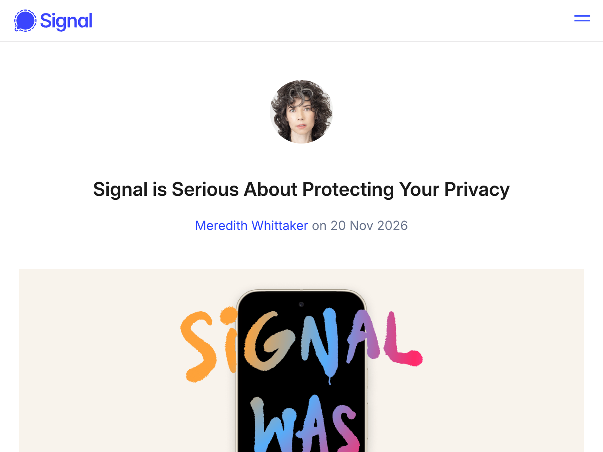
Signal 블로그 11월 20일
iOS · Android에서는 화면을 가린다
iOS 27에서는 앱 안 스크린샷을 막아요. Android에서는 AI 비서가 화면을 읽으려 하면 「화면 보안」을 켜요.
AI 비서에게는 빈 화면만 보여요.
Signal 블로그
3 / 5
macOS는 사용자가 직접 막아야 한다
macOS에서는 앱이 막지 못해요. 그래서 Siri 설정의 제외 앱에 Signal을 넣으라고 권해요.
막는 일이 사용자 설정에 달려 있어요.
Signal 블로그
4 / 5
Signal도 「불완전하다」고 인정했다
기기에 이미 저장된 내용을 파일로 읽는 길은 남아 있어요. 화면만 가린 셈이에요.
저장된 기록까지는 못 지켜요.
Signal 블로그
5 / 5
운영체제 회사에 「거부할 방법」을 요구
Signal은 Apple · Google · Microsoft에 앱이 AI의 데이터 접근을 거부할 문서화된 방법을 달라고 했어요.
앱 혼자서는 다 막을 수 없어요.
Signal 블로그
이 소식이 뜻하는 것
원리
운영체제에 들어간 AI는 앱 위에서 화면을 읽어요. 앱이 막을 공식 수단이 없어 앱마다 우회로를 만들어요.
해석
화면을 읽는 에이전트를 만드는 쪽도 같은 문제를 겪어요. 이런 앱에서는 막힌다고 보고 설계해야 해요.
아직 모름
운영체제 회사들의 답은 이 발표에 없어요.
우리 팀에게는
화면을 읽는 에이전트를 만든다면 이런 앱에선 막힌다고 본다.
macOS 27이면 Siri 설정의 제외 앱에 민감한 앱을 넣는다.
이번 주 써 볼 도구
팀이 이번 주에 깔아서 덕을 볼 것.
6
Modern Web Guidance (브라우저 회사들이 함께 낸 최신 웹 지침)
무엇인가
코딩 에이전트는 몇 년 전 웹 코드를 습관처럼 짠다. 브라우저가 이미 기본으로 하는 일을 라이브러리로 다시 만든다.
Modern Web Guidance는 그 습관을 최신 지침으로 바꾸는 스킬이다. Chrome · Edge · Firefox · MDN 팀이 함께 관리한다.
에이전트는 짧은 검색어로 지침을 찾고, 맞는 한 편만 읽어 온다. 지침을 통째로 싣지 않아 대화가 무거워지지 않는다.
왜 지금
주간 설치가 1,417 → 25,083으로 뛰었다. 세 브라우저 회사가 함께 낸 지침이라는 점이 컸다.
원 저장소도 한 주에 별 2,309개를 받아 GitHub 트렌딩에 올랐다.
모달 · 애니메이션 같은 화면 기능을 맡길 때 지침부터 찾게 한다. 옛 라이브러리 대신 브라우저 기본 기능으로 짠다.
물려받은 오래된 화면 코드는 legacy-scan으로 낡은 패턴부터 찾는다. 「어디부터 고치지」가 목록이 된다.
리뷰에서 「요즘은 이렇게 안 써요」를 말로만 하던 것을 지침 이름으로 남긴다. 근거가 생겨 논쟁이 짧아진다.
예시 프롬프트
modern-web-guidance 스킬로 <페이지 경로>를 점검해 줘. legacy-scan으로 낡은 패턴을 먼저 찾아 줘. 고칠 곳마다 근거가 된 지침 이름을 붙이고, 코드는 내가 고르면 고쳐.
주의. Node.js 22 이상이 필요하다. 검색어 · 에이전트 이름 같은 사용 기록을 기본으로 보낸다고 한다. 끄려면 DISABLE_TELEMETRY=1을 쓴다.
7
Orca (코딩 에이전트 여럿을 한 앱에서)
무엇인가
에이전트를 두 개 넘게 돌리면 어느 터미널 탭이 무슨 일을 하는지부터 헷갈린다. Orca는 그 탭들을 한 화면으로 모은다.
Claude Code · Codex를 내 구독 그대로 여러 개 나란히 돌린다. Mac · Windows · Linux에서 도는 오픈소스 데스크톱 앱이다(MIT).
작업마다 worktree를 따로 둔다. 같은 저장소를 폴더 여러 개로 나눠 여는 git 기능이라, 에이전트끼리 부딪히지 않는다.
왜 지금
지난 7일 별이 6,224개 늘었다.
11월 22일 판에서 여러 컴퓨터의 봇을 한 그룹에 묶게 됐다. 휴대폰 앱에서 에이전트를 끝까지 관리하게도 됐다.
설치
brew install --cask stablyai/orca/orca
활용법
며칠 걸리는 리팩터링을 여러 갈래로 나눌 때 쓴다. 탭마다 띄우던 에이전트를 칸반 보드처럼 한 화면에서 본다.
급하지 않은 버그 티켓은 Slack · Linear에서 봇에게 맡긴다. 테스트를 거친 PR로 돌아오고 나는 리뷰만 한다.
에이전트가 낸 diff의 고칠 줄에 메모를 달면 그대로 에이전트에게 간다. 다시 설명하는 수고가 준다.
예시 프롬프트
로그인 뒤 프로필 사진이 바뀌지 않는 버그를 고쳐 줘. 원인을 먼저 한 줄로 설명하고, 고친 뒤 관련 테스트를 돌려 통과 결과와 함께 PR로 올려 줘.
주의. 봇은 내 Claude Code · Codex 구독으로 돌아서 요금과 한도는 그 구독을 따른다. Homebrew에서 그냥 orca는 관계없는 앱이니 전체 이름을 쓴다. 익명 사용 통계를 모으며, 끄는 법은 orca.dev의 telemetry 문서에 있다.
8
CLI-Anything (아무 앱이나 에이전트가 부르는 명령줄로)
무엇인가
에이전트에게 화면 있는 프로그램을 맡기면 결국 화면을 눌러야 한다. 그래서 느리고 자주 틀린다.
CLI-Anything은 Apache-2.0 라이선스의 Claude Code 플러그인이다. 프로그램의 소스 코드를 읽어 에이전트용 명령줄 도구(CLI)를 만든다.
분석부터 설치까지 7단계로 만든다. 이미 만든 CLI는 CLI-Hub에서 받아 바로 쓴다.
왜 지금
지난 7일 중 5일 GitHub 일간 트렌딩에 올랐다.
설치
/plugin marketplace add HKUDS/CLI-Anything
활용법
문서 수십 개를 PDF로 바꿀 때 LibreOffice용 CLI를 맡긴다. 하나씩 열어 저장하던 일이 명령 한 번이 된다.
그림 크기 맞추기 같은 반복 편집은 GIMP용 CLI로 맡긴다. 버튼 위치가 아니라 명령으로 일해 덜 틀린다.
소스가 있는 사내 도구는 /cli-anything <소스 경로>로 전용 CLI를 만든다. 에이전트가 결과를 JSON으로 읽는다.
예시 프롬프트
CLI-Hub에서 LibreOffice용 CLI가 있는지 찾아 설치해 줘. 있으면 그 CLI로 <폴더>의 .docx 파일을 모두 PDF로 바꿔 줘. 실행 전에 어떤 명령을 쓸지 먼저 보여 줘.
주의. Python 3.10 이상이 필요하다. README는 최상위급 모델을 쓰라고 하고, 작은 모델은 틀린 CLI를 만들 수 있다고 적었다. 한 번에 기능을 다 덮지 못하면 refine을 여러 번 돌린다. GIMP · LibreOffice 같은 원래 앱은 따로 깔아야 한다.
9
HyperFrames (HTML로 짜서 MP4로 뽑는 영상 도구)
무엇인가
짧은 소개 영상 하나에도 편집 앱을 열고 자막 · 전환을 손으로 맞춘다. 문구 하나 바뀌면 처음부터 다시 한다.
HyperFrames는 HeyGen의 오픈소스 도구다(Apache-2.0). HTML · CSS · 애니메이션을 MP4 영상으로 렌더한다.
웹 페이지 만들듯 짜면 영상이 된다. 에이전트는 계획, HTML 작성, 미리보기, 렌더 순서로 일한다.
왜 지금
11월 26일 v0.9.100이 나왔다. 저장소는 7일 동안 별 3,187개를 더 받았다.
설치
npx skills add heygen-com/hyperframes
활용법
기능 소개 영상을 말로 시키고 npx hyperframes preview로 확인한다. 자막 · 전환을 코드로 고쳐 다시 뽑는다.
발표 첫 화면의 숫자 애니메이션 같은 짧은 모션을 HTML로 짠다. MP4로 뽑아 슬라이드에 그대로 넣는다.
문구만 다른 영상이 여러 판 필요할 때 글자만 바꿔 다시 렌더한다. 편집을 처음부터 되풀이하지 않는다.
예시 프롬프트
/hyperframes로 10초짜리 기능 소개 영상을 만들어 줘. 제목은 서서히 나타나게 하고, 장면 순서를 먼저 보여 준 뒤 렌더해 줘.
주의. Node.js 22 이상과 FFmpeg가 필요하다. 오픈소스 도구는 무료이고, 웹 Studio의 Pro 요금제는 월 $25다. 결과물이 「AI 티」가 나는지는 짜는 HTML에 달렸고, 이번에 직접 확인하지 못했다.
실무 가이드
이번 주 직접 해 볼 만한 것. 설치부터 실습, 막힐 때까지.
10
AI 브라우저 고르기: 뭔지부터 알고, 셋을 같은 기준으로 비교
보통 브라우저는 사람이 누른다. AI 브라우저는 AI 에이전트가 페이지를 읽고, 버튼을 누르고, 칸에 입력한다.
「거래처 열 곳 정보 모으기」를 말로 맡기면 에이전트가 그 사이트를 직접 돈다. 방식은 두 갈래다.
하나는 확장이다. Claude in Chrome처럼 쓰던 크롬에 에이전트를 붙여 로그인 상태를 그대로 쓴다.
다른 하나는 브라우저 자체를 에이전트에 맞게 다시 만든 것이다. 에이전트마다 따로 공간을 주거나, 비밀번호를 AI에게 보이지 않고 넣는다. 대신 브라우저를 옮겨야 한다.
아래는 ego lite · Aside · Handlus를 같은 기준으로 놓았다. 방식, 운영체제, 쓰던 브라우저 유지, 비밀번호, 무료 한도, 가격, 확인 여부다.
설치 · 설정
npx skills add citrolabs/ego-lite
기준선, Claude in Chrome (Anthropic 공식 확장): 쓰던 크롬 · 엣지에 붙는 확장이다. 로그인 상태를 그대로 쓰고, 로그인 화면 · CAPTCHA에서는 멈추고 사람에게 넘긴다. Pro · Max · Ultra · Team · Enterprise에서 쓰고, Claude Code에서는 claude --chrome으로 켠다. 확인함(공식 문서).
ego lite (citrolabs): 에이전트를 위한 별도 무료 브라우저다. 에이전트마다 따로 떨어진 Space를 줘서 내 탭과 부딪히지 않고 여러 일을 동시에 돌린다. macOS · Windows를 지원하고 Linux는 계획이다. 브라우저를 옮겨야 하고, 모델 비용은 따로다. 확인함(README).
Aside: 사람과 에이전트를 위해 다시 만든 브라우저다. macOS 15 이상, Windows 10(22H2) 이상을 지원하고 브라우저를 옮겨야 한다. 비밀번호는 자동 입력으로 넣되 AI에게 원문을 보여 주지 않고, 결제 · 게시 · 메시지는 내 확인을 기다린다. 무료는 월 500크레딧이고 내 ChatGPT · Claude 구독을 연결한다. Pro 월 $20, Max 월 $200이다. 확인함(공식 사이트 · 가격 페이지).
Handlus: 브라우저가 아니라 확장 + 데스크톱 앱이다. 크롬 · 엣지 · 웨일 · 브레이브 · 파이어폭스(140 이상)에 붙고, MCP로 Claude Code · Codex가 브라우저와 컴퓨터를 다룬다. 쓰던 브라우저를 그대로 둔다. Mac · Windows · Linux(Ubuntu 24.04 이상)를 지원한다. 무료는 주 1,500회 요청(컴퓨터 조작은 300회까지), Pro는 월 $20(한국은 부가세 포함 $22)이다. 확인함(handlus.com).
누구에게 무엇: 쓰던 크롬을 그대로 두고 Claude Code만 쓴다면 Claude in Chrome. 돈 들이지 않고 에이전트 여럿을 동시에 돌리려면 ego lite. 로그인이 많은 사이트에서 비밀번호를 AI에게 보이기 싫으면 Aside. 쓰던 브라우저에 Claude Code · Codex를 함께 붙이고 컴퓨터 조작까지 맡기려면 Handlus.
실습
ego lite에서 Claude Code에게 웹 조사 하나를 맡겨, 내 탭과 따로 도는지 본다.
나는 <주로 맡길 웹 일>을 AI에게 맡기고 싶어. 운영체제는 <OS>, 지금 쓰는 브라우저는 <브라우저>야. Claude in Chrome, ego lite, Aside, Handlus 중 무엇이 맞는지 비밀번호 처리와 비용을 기준으로 골라 줘.
ego-browser로 조사 맡기기
ego-browser로 <조사할 주제>에 대해 <사이트 세 곳>을 돌며 정보를 모아 표로 정리해 줘. 로그인이나 결제가 필요한 화면이 나오면 멈추고 나에게 물어봐.
Claude in Chrome으로 내 화면 확인하기
<내 웹앱 주소>를 열고 <기능 이름>을 직접 눌러 확인해 줘. 콘솔 오류가 있으면 메시지를 그대로 옮기고, 아무것도 저장하거나 보내지는 마.
안 될 때
--chrome을 붙였는데 크롬 연동이 켜지지 않는다.
API 키나 claude setup-token 토큰으로 로그인하면 꺼진 채로 남는다. /login으로 Claude 플랜 계정에 로그인한다.
WSL에서 Claude in Chrome이 연결되지 않는다.
WSL은 지원하지 않는다고 공식 문서가 적었다. macOS · Linux 터미널에서 쓴다.
주의. AI 브라우저는 로그인된 사이트에서 실제로 누르고 입력한다. 결제 · 게시 · 메일 발송 앞의 승인 단계는 끄지 않는다. 에이전트가 읽은 페이지 내용은 고른 모델로 간다. Aside의 컴퓨터 프로그램 조작이 모든 요금제에 열리는지는 공식 가격 페이지에 없어 확인 안 됨이다. 속도 · 성공률 수치는 모두 업체 자체 시험이다.